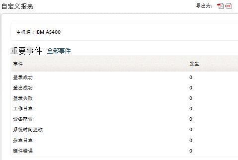

IBM iSeries（AS/400）报表
IBM AS/400
系统历史日志包含了系统操作和系统状态的信息。历史日志记录了设备的高级操作，例如启动、完成工作、设备状态改变、系统操作信息和安全攻击。这些信息都以消息的格式进行记录。这些消息存储在系统创建的文件夹下。历史日志将帮助您跟踪和控制系统活动。当您管理特殊的系统活动时，根据准确的历史日志，可以帮助您分析问题，以及历史日志系统所有的关键操作和状态信息。
要查看IBM iSeries（AS/400）报表，可通过以下菜单实现：
- 选择主页页签 > 主机
- 点击主机类型是IBM AS/400的主机名。IBM AS/400 主机自定义报表将会显示，在自定义报表的重要事件标签下将会显示历史日志报表。
AS/400系统历史日志报表
EventLog Analyzer将会使用AS/400系统的历史日志，生成各种特殊的报表。

这些报表是：
- Successful Logons
- Successful Logoffs
- Unsuccessful Logons
- Job Logs
- Device Configuration
- System Time Changed
- Journal Logs
- Hardware Errors
|